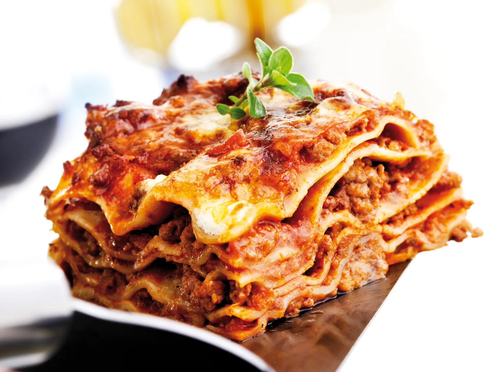

Lasangna

Description
Lasagne are a type of pasta, possibly one of the oldest types,
made of very wide, flat sheets.
Either term can also refer to
an Italian dish made of stacked layers of lasagne alternating
with fillings such as ragù (ground meats and tomato sauce), vegetables,
cheeses (which may include ricotta, mozzarella, and parmesan),
and seasonings and spices, like Italian seasoning, such as garlic, oregano and basil.
The dish may be topped with grated cheese, which becomes melted after baking.
Typically cooked pasta is assembled with the other ingredients and then baked in an oven.
The resulting baked pasta is cut into single-serving square portions.
Ingrdients
Dosi per 6-8 persone.
Ingredienti per il ragù:
- Passata 1,3 l
- Carne macinata di suino 200 g
- Carne macinata di manzo 500 g
- Sedano 1
- Vino bianco 100 ml
- Burro 30 g
- Cipolla 1
- Carote 2
- Sale q.b.
- Olio extra vergine d'oliva q.b.
Altri ingredienti:
- Pasta all'uovo
- Besciamella
- Parmigiano grattugiato 200 g
- Burro q.b.
Preparazione
Preparare il ragù:
- Prepare il soffritto con olio, burro,
cipolla e sedano tritati
- Aggiungere le carote a cubetti e
far cuocere a fuoco lento
- Aggiungere la carne e far rosolare
- Sfumare con il vino
- Aggiungere il concentrato
- Aggiungere la passata
- Aggiungere sale e acqua e far cuocere per 2 ore.
Prepare le lasagne:
- Imburrare teglia 25x35 cm e realizza uno
di pasta
- Prosegui con la besciamella
- Aggiungi uno strato di ragù
- Completa con il parmigiano
- Prosegui con tutti gli strati che riesci a fare
- L'ultimo strato deve essere con ragù besciamella e parmigiano
- Poi coprilo con la sfoglia
- Non condirle ma solo usarle come guscio
- Inforna a 200º in forno per 40 minuti, sforna ed elimina
la pasta in superficie
- Lascia qualche minuto, poi impiatta